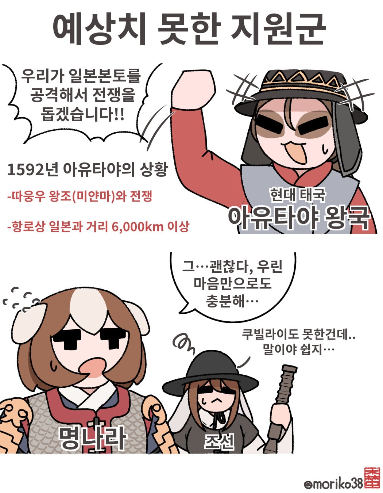
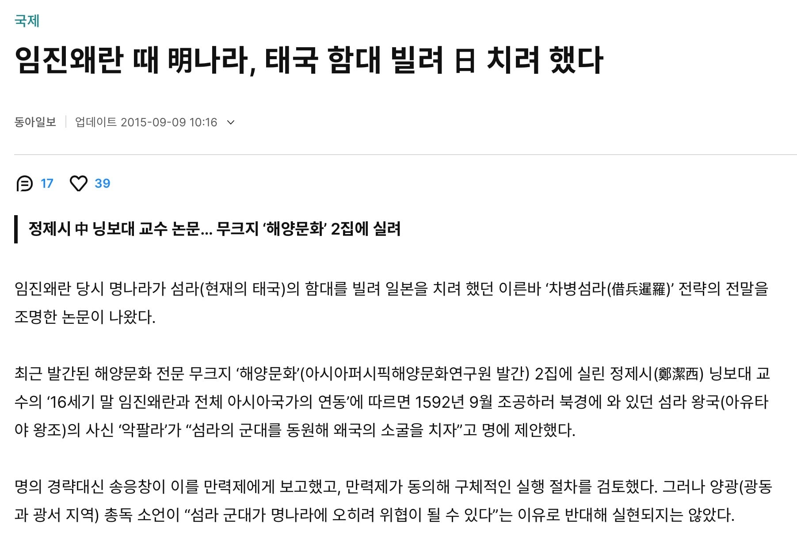
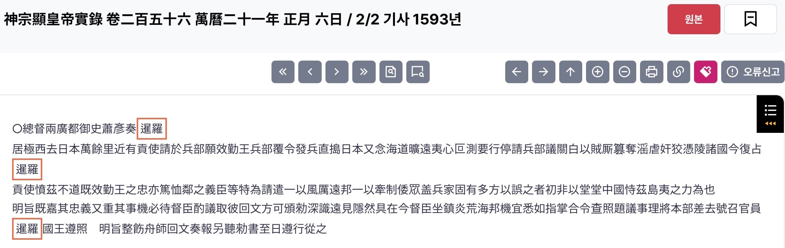
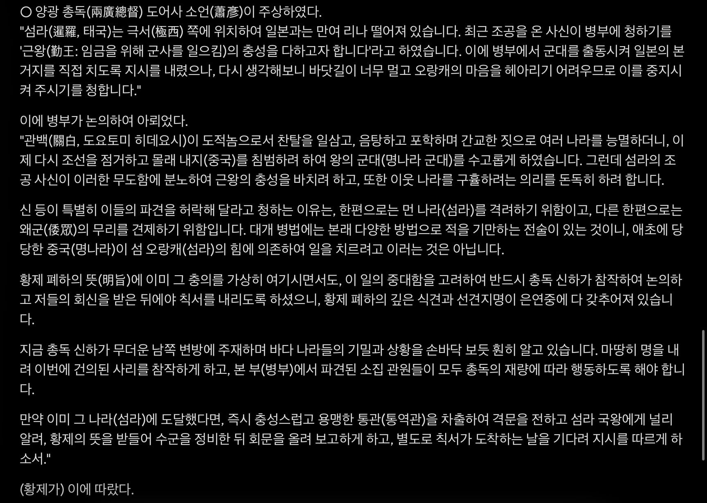
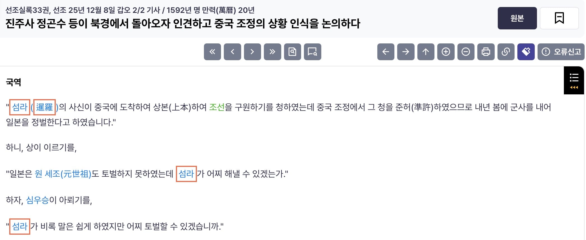

명 실록 기록 및 ai 번역


조선왕조실록의 기록



명 실록 기록 및 ai 번역


조선왕조실록의 기록
투자사기 ㅋㅋㅋㅋ
따거
외교적 명분을 걸고 실리를 취하려고 한거지 뭐
저게 가능하려나.....ㅋㅋㅋㅋㅋㅋㅋ
일단 까짓것 해보죠! (안 함)
그냥 해본 말이지
아유타야야 네가 누렁하치랑 다를 게 뭐니
태국은 무슨동물 설정일까?
미어캣
어떻게 왕조이름이 따흐흑 왕조
저때 진짜로 칠려한거 맞음 일본애들 해적들이 하도 깽판을 쳐대고 일본이 태국도 털꺼임 ㅋㅋ 입털어서 개빡쳐서 준비한거
왜구 항해력이 좋은거야..
아님 털 곳이 줄어서 혹은 늘릴려고 거기까지 쳐들어 간거야.. ㅎㄷㄷ
서양에 바이킹이있다면 동양엔! 왜구가있었다 이말이야
다른 얘기지만 태국이 625때 아시아 중에서 가장먼저 파병의사 밝히고 전쟁후 우리나라가 빈곤할때 20년인가? 지원해줌
태국도 그렇고
누르하치도 ㅋ 우리가 도와줌? 얘기하니까
명나라가 기겁해서 여진 니네는 가만있어라 항상 지켜본다.
이러고 누르하치 누르는중이었음ㅋㅋ
말만하면 누르하치 원병으로 왓음
이름이 누르하치라서 누르는건가

왜란 당시 아직 누르하치는 여진 통합 전쟁 중일텐데 어캐와
걔도 그냥 말만 한거임 실제로 오라고 하면 아씨바 좆됐네 했을거
누르하치는 이미 저당시에 명하고의 할아버지문제로 인한 무역권 독점 상태였음
뭔소리냐면 여진 어느부족이든 명나라하고 무역할라면 누르하치를 지나야만 된단 소리였고
명이 그렇게해서 여진족 통제중인 상태였음
저 당시에 다른 여진족들이 그냥 흡수 안당할라고 버티는 상태였지 이미 경제적으로는 종속상태였고 임진왜란으로 참전한다했으면 도와준다는 명분으로 통합 더 빨리했겠지
어쨋든 결과론으로 임진왜란으로 명나라 통제권 약해지니까 경제력으로 무릎꿇려서 여진 통합해나감
누르하치가 여진애들 무력으로 굴복시킨게 아님
후에 일어난 2차례 호란도 결국에 명나라에서 무역권 박탈하고 니네랑 무역안함ㅋ 시전하니까 ㅈ됏음; 조선이라도 약탈해야겟음;; 하고 온거
보급 못하면 망한다!
보급은 현지에서! 아시아인은 초식이라 풀만 먹어도 된다!
일단 지르고 봤는데 좆된 예) 북한
아유타야가 바보도 아니고
진짜 하겠다는게 아니라
저걸 빌미로 "돈 줘" 했는데 명나라가 눈치까지 "ㅈㄹㄴ" 한듯